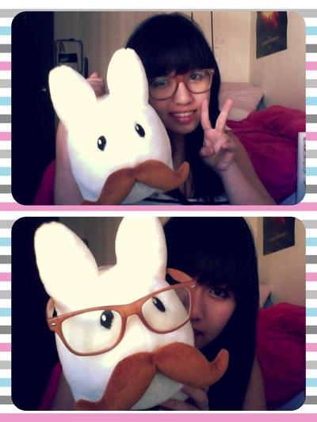

The Beginning
Ever since I was young, I've been interested in HTML/CSS. However, I never thought to act upon my interest of it. Being the smart child I was, I decided to follow my parents' wishes and transferred to the University of California, San Diego as a Biochemistry/Chemistry major with the eventual goal of going to pharmacy school.
That was a big mistake. I quickly found out it was not the major for me and I was not interested it in the least. I had to force myself to do the coursework and I was very unhappy while doing so.
The Middle
It was around this time that I found out about Cognitive Science. The more I learned about it, the more I wanted to change to this major. So over the summer I did. It was the best choice I made throughout my college years so far. I decided to specialize in
Human-Computer Interaction since the concept of helping to make interfaces more usable and efficient greatly appealed to me.
The End
I have come to enjoy learning how all of the minor details (that Cognitive Science has taught me to see) can help improve a person's life positively if you analyze them. I'm interested in
interaction design, user experience design/research, and web design/interaction.
To finish this off, here is a picture of me. Just so you know I am a real person and not a robot.
